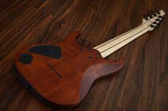
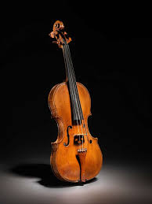

El DDJ-REV7 está construido para ayudarte a sacar el máximo provecho del software de performance Serato DJ Pro y cuenta con un diseño totalmente nuevo que incluye ruedas
jog grandes y motorizadas con pantalla On Jog para crear una conexión táctil entre tú y tu música.
Guitarra Electrica Fender Special

Es un tipo de guitarra en la que, a diferencia de la guitarra española y la guitarra acústica, su caja no hace resonancia,
por lo que el sonido se produce indirectamente por inducción eléctrica y a través de un Amplificador de guitarra
Guitarra Electrica Fender Special

posee una forma abombada, con silueta estilizada determinada por una curvatura superior e inferior con un estrechamiento a la cintura en forma de C.
Las tapas del violín se modelan con suaves curvas que proporcionan la característica de abovedado.